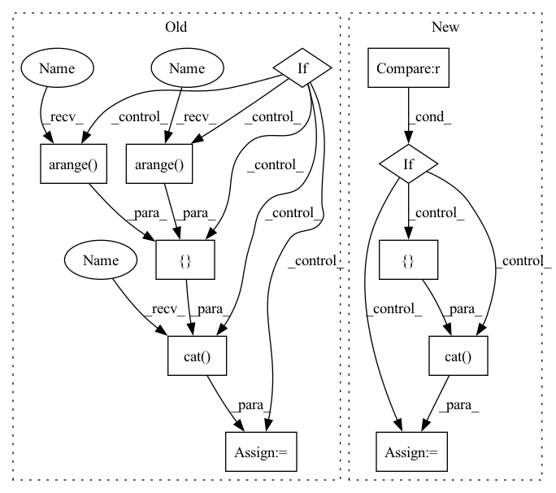

Pattern ID :27241

Before Change
self.coord_conv = coord_conv
def forward(self, input):
if not self.coord_conv:
return input
b = input.shape[0]
h = input.shape[2]
w = input.shape[3]
x_range = T.arange(0, w, dtype=T.float32, device=input.device) / (w - 1) * 2.0 - 1
y_range = T.arange(0, h, dtype=T.float32, device=input.device) / (h - 1) * 2.0 - 1
x_range = x_range[np.newaxis, np.newaxis, np.newaxis, :].repeat((b, 1, h, 1))
y_range = y_range[np.newaxis, np.newaxis, :, np.newaxis].repeat((b, 1, 1, w))
offset = T.cat([input, x_range, y_range], dim=1)
return offset
class SPP(torch.nn.Module):
After Change
def forward(self, x):
gx, gy = add_coord(x, self.data_format)
if self.data_format == "NCHW":
y = torch.cat([x, gx, gy], 1)
else:
y = torch.cat([x, gx, gy], -1)
y = self.conv(y)
return y
In pattern: SUPERPATTERN
Frequency: 3
Non-data size: 11
Instances
Fragment ID: 80940067
Project Name: miemie2013/miemiedetection
Commit Name: aabe1f2d364493c30179de6cf7d5c2d0c6ee7258
Time: 2021-12-30
Author: 53960695+miemie2013@users.noreply.github.com
File Name: mmdet/models/custom_layers.py
M Class Name: CoordConv
N Class Name: CoordConv
M Method Name: forward(2)
N Method Name: forward(2)
M Parent Class: torch.nn.Module
N Parent Class: torch.nn.Module
M File Name: mmdet/models/custom_layers.py
N File Name: mmdet/models/custom_layers.py
M Start Line: 498
M End Line: 508
N Start Line: 574
N End Line: 580
'>
Before Change
neg_idxs = torch.randint(low=0, high=high, size=(bsz, self.n_negatives * tsz))
if self.sample_distance is not None and self.sample_distance < tsz:
neg_idxs += torch.cat(
[torch.arange(start=1, end=tsz - self.sample_distance, device=neg_idxs.device, dtype=neg_idxs.dtype),
torch.arange(start=tsz - self.sample_distance, end=tsz - self.sample_distance * 2 - 1, step=-1,
device=neg_idxs.device, dtype=neg_idxs.dtype)])
if not self.cross_sample_negatives:
for i in range(1, bsz):
neg_idxs[i] += i * high
After Change
else:
neg_idxs = cross_neg_idxs
if self.cross_sample_negatives > 0 and self.n_negatives > 0:
neg_idxs = torch.cat([neg_idxs, cross_neg_idxs], dim=1)
negs = y[..., neg_idxs.view(-1)]
negs = negs.view(
fsz, bsz, self.n_negatives + self.cross_sample_negatives, tsz
'>
Fragment ID: 80940097
Project Name: mohammadkhalifa/fairseq-tagging
Commit Name: 3335de5f441ee1b3824e16dcd98db620e40beaba
Time: 2020-02-29
Author: alexei.b@gmail.com
File Name: fairseq/models/wav2vec.py
M Class Name: Wav2VecPredictionsModel
N Class Name: Wav2VecPredictionsModel
M Method Name: sample_negatives(2)
N Method Name: sample_negatives(2)
M Parent Class: nn.Module
N Parent Class: nn.Module
M File Name: fairseq/models/wav2vec.py
N File Name: fairseq/models/wav2vec.py
M Start Line: 385
M End Line: 404
N Start Line: 583
N End Line: 629
'>
Before Change
self.coord_conv = coord_conv
def forward(self, input):
if not self.coord_conv:
return input
b = input.shape[0]
h = input.shape[2]
w = input.shape[3]
x_range = T.arange(0, w, dtype=T.float32, device=input.device) / (w - 1) * 2.0 - 1
y_range = T.arange(0, h, dtype=T.float32, device=input.device) / (h - 1) * 2.0 - 1
x_range = x_range[np.newaxis, np.newaxis, np.newaxis, :].repeat((b, 1, h, 1))
y_range = y_range[np.newaxis, np.newaxis, :, np.newaxis].repeat((b, 1, 1, w))
offset = T.cat([input, x_range, y_range], dim=1)
return offset
class SPP(torch.nn.Module):
After Change
def forward(self, x):
gx, gy = add_coord(x, self.data_format)
if self.data_format == "NCHW":
y = torch.cat([x, gx, gy], 1)
else:
y = torch.cat([x, gx, gy], -1)
y = self.conv(y)
return y
'>
Fragment ID: 80940084
Project Name: miemie2013/miemiedetection
Commit Name: aabe1f2d364493c30179de6cf7d5c2d0c6ee7258
Time: 2021-12-30
Author: 53960695+miemie2013@users.noreply.github.com
File Name: mmdet/models/custom_layers.py
M Class Name: CoordConv
N Class Name: CoordConv
M Method Name: forward(2)
N Method Name: forward(2)
M Parent Class: torch.nn.Module
N Parent Class: torch.nn.Module
M File Name: mmdet/models/custom_layers.py
N File Name: mmdet/models/custom_layers.py
M Start Line: 498
M End Line: 508
N Start Line: 574
N End Line: 580